Pick the moments
Use Snip AI to prepare short clips from a longer video and review the results.
 snipstore
snipstore
Find the moments worth clipping. Turn every spoken line into captions people can follow. Snip AI and Capsnip give your creator workflow a faster finish—right on your Windows desktop.
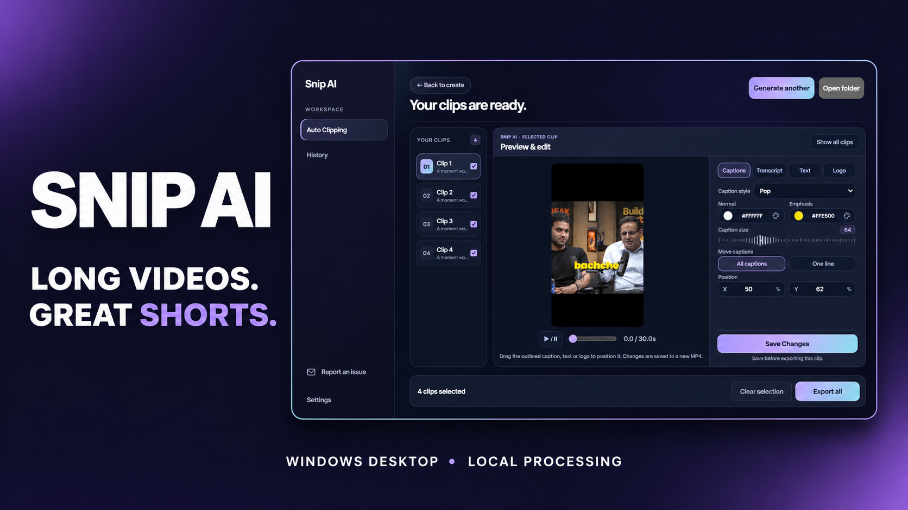
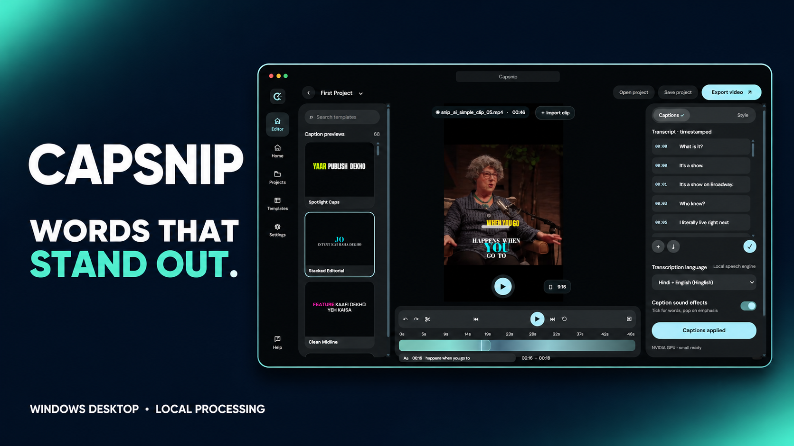
Choose the step you want to speed up—or use both together.
Shape a long recording into moments people want to watch, then make every line easy to follow.
Use Snip AI to prepare short clips from a longer video and review the results.
Use Capsnip to transcribe, correct, style, and export captions as an MP4.
Export locally and get back to the ideas waiting in your queue.
Two focused Windows tools for video creators. Buy once, activate with a key, and keep creating.
After payment, download your activation key as a .txt file and keep it safe before closing the page. Download and install the app directly on your Windows PC.
Missed your download or closed the page? Email your Cashfree order ID or payment receipt to snipaisupport@gmail.com ↗. We’ll help you get your download link and key.
Recent checkout links are remembered for 30 days in this browser. On a shared PC, save your key and clear browser data after use.10 typography examples available in both Snip AI and Capsnip. Choose your look, then make it yours.
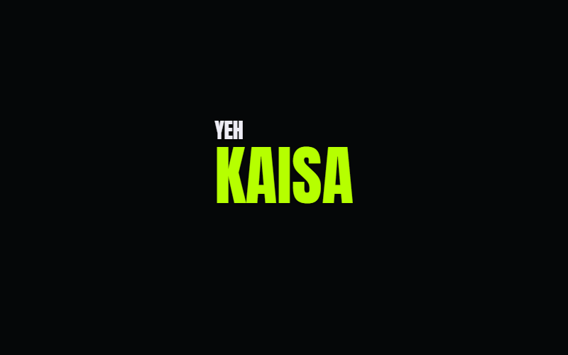
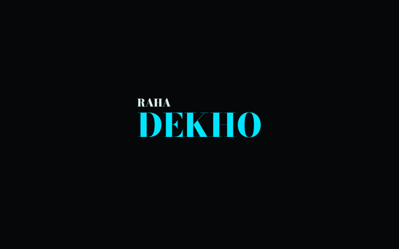
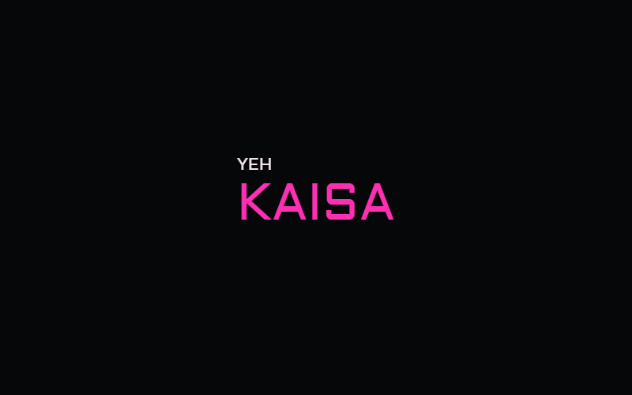
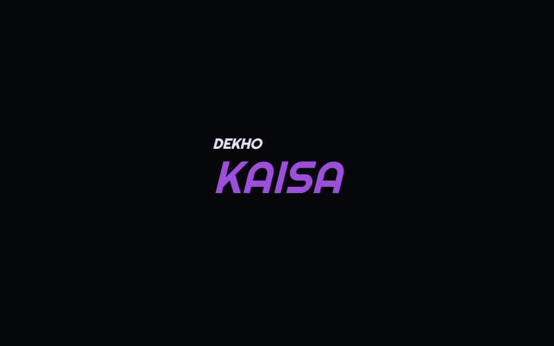
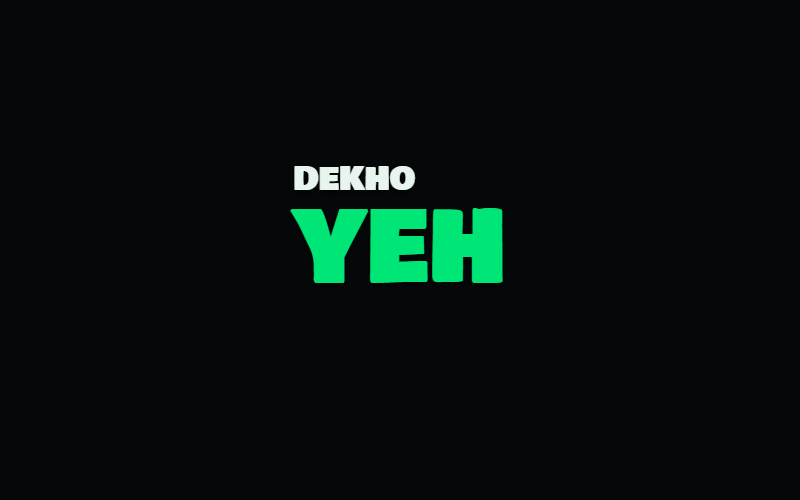
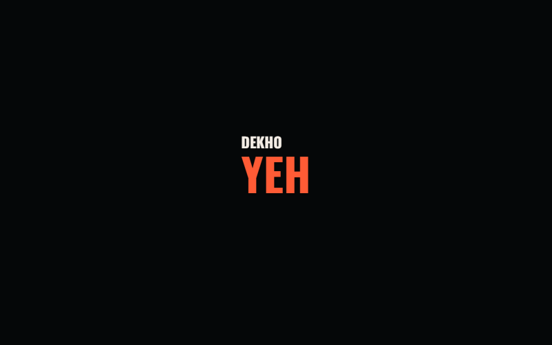
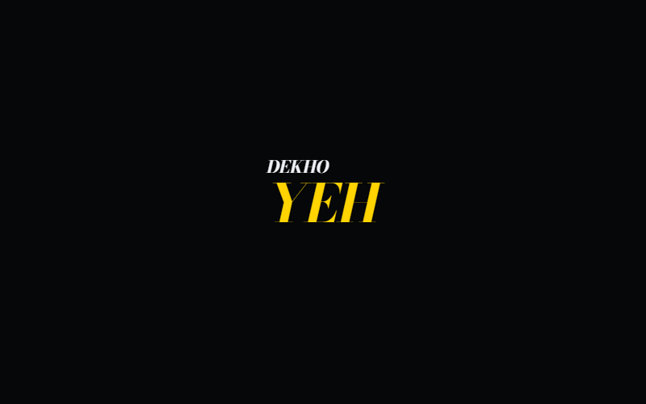
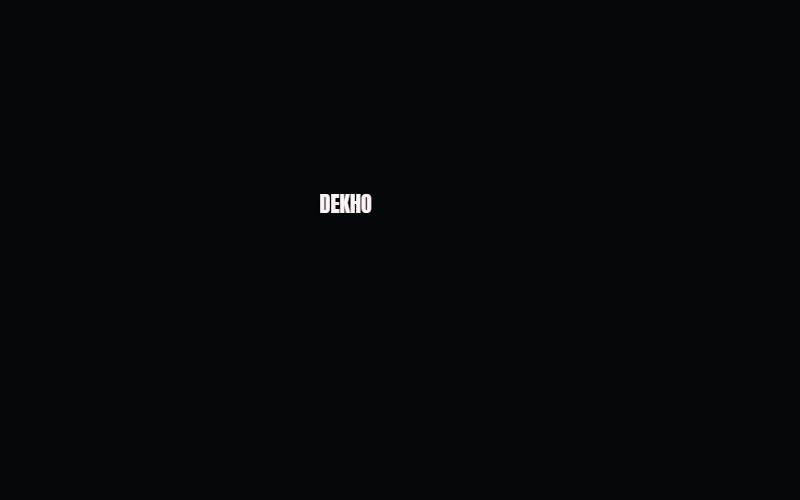
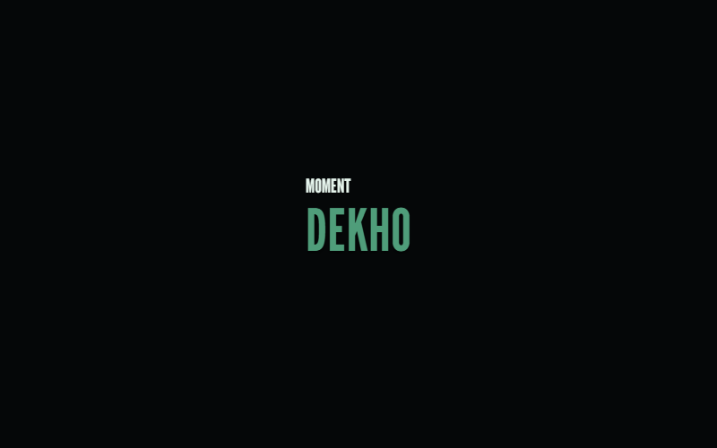
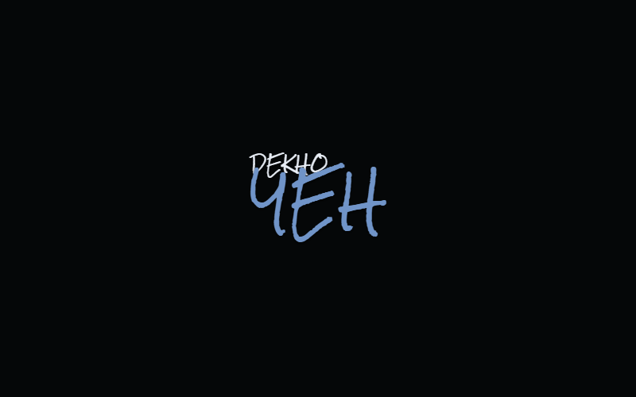